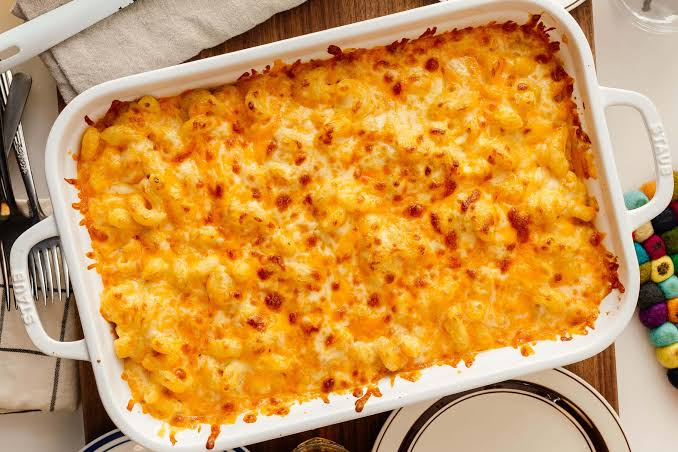

Home
Tini's Mac and Cheese

Description
Tini's mac and cheese recipe was created by chef Tineke Younger, who's shared
countless delicious recipes on social media. Her mac and cheese has earned tons
of praise, and she reshares it every year when Thanksgiving rolls around.
Ingredients
- 1 lb cavatappi pasta
- 16 oz mozzarella cheese, freshly shredded
- 16 oz Colby Jack cheese, freshly shredded
- 8 oz cheddar cheese, freshly shredded
- 1 tsp garlic powder
- 1 tsp smoked paprika
- ½ tsp salt
- ½ tsp black pepper
- 3 tbsp unsalted butter
- 3 tbsp all-purpose flour
- 1 (12 oz) can evaporated milk
- 2 cups heavy cream
- 1 tbsp Dijon mustard
- Fresh chives, finely chopped
Steps
- Preheat your oven to 350° F and grease a 9 x 13-inch baking dish.
- Bring a large pot of generously salted water to a boil and cook the cavatappi
for about 8 minutes (7 minutes if making ahead). Drain and set aside.
- Combine the freshly shredded mozzarella, Colby Jack, and cheddar cheeses in a
large bowl. Divide evenly between two bowls, reserving half for the sauce and
half for layering. In a separate small bowl, mix together the garlic powder,
smoked paprika, salt, and pepper. Divide the seasonings in half and set aside.
- Melt the butter in a large skillet over low heat. Add half of the seasoning
mixture and stir for about 30 seconds to bloom the spices and bring out their
flavor. Add the flour and cook for 3-5 minutes, stirring continuously until a
smooth, paste-like roux forms.
- Slowly add the evaporated milk, whisking a little at a time to prevent lumps.
Gradually whisk in the heavy cream, followed by the remaining seasonings and
Dijon mustard. Continue whisking until smooth and combined.
- Reduce the heat to low and gradually add half of the shredded cheese mixture,
one handful at a time. Whisk until each addition is fully melted before adding
more. Continue until the sauce is smooth and creamy. If the sauce becomes too
thick, add a splash of milk to thin it out.
- Add the cooked cavatappi to the cheese sauce and gently fold everything together
until the pasta is evenly coated.
- Spread half of the pasta into the prepared baking dish, then sprinkle with half
of the reserved shredded cheese. Add the remaining pasta and finish with the
rest of the shredded cheese on top.
- Bake at 350° F for 20-25 minutes, until the cheese is melted and bubbly. Broil
for an additional 2 minutes, keeping a close eye on it, until the top is golden
brown.
- Remove from the oven, garnish with freshly chopped chives if desired, and serve
warm!